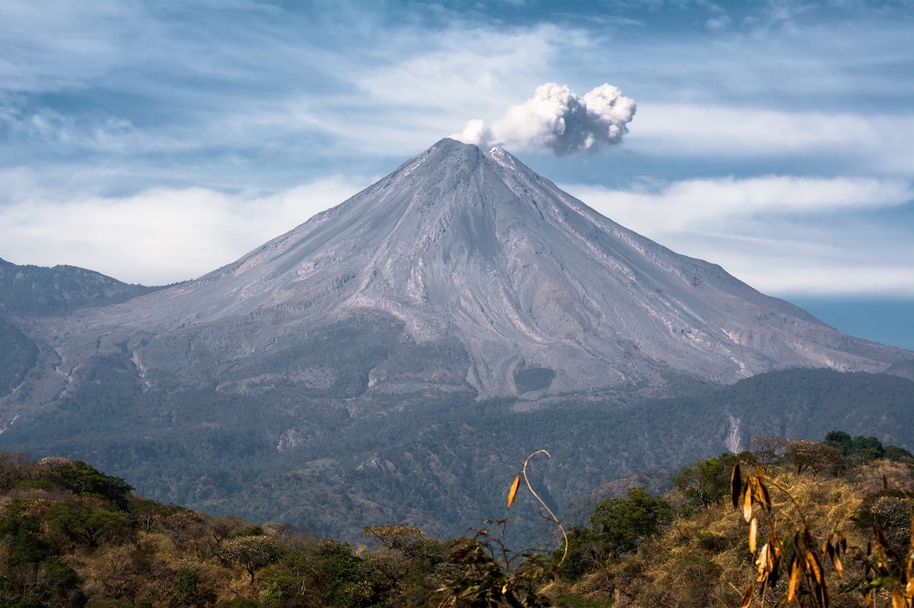

- Lugares Turisticos en colima -

Colima ofrece una variedad de atractivos turísticos, desde la belleza natural de sus volcanes y playas hasta la rica cultura de sus ciudades y pueblos. Entre los lugares destacados se encuentran el Volcán de Colima, Manzanillo con sus playas y el centro histórico de Colima, así como Comala, famoso por su arquitectura colonial y su vida nocturna.